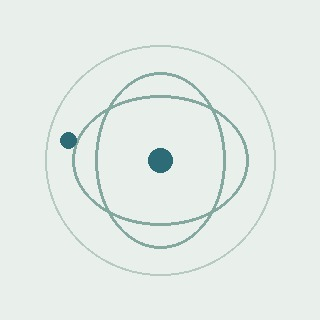

NUCLEAR PHYSICS / PERSONAL WEBSITE
探索原子核，从实验到理解。
欢迎来到我的个人学术网站。这里记录核物理研究，也分享用于理解反应过程的相对论运动学工具。
KINEMATIC EXPLORER
RELATIVISTIC
FOUR-MOMENTUM CONSERVATION
示意图 · 非计算数据

yemingxin
单位待补充
ABOUT ME
关于我
我的研究兴趣涵盖实验核物理、核反应、蒙特卡罗模拟和数据分析。个人简介与学术经历待补充。
OPEN SCIENTIFIC TOOLS
全部工具 ↗
把运动学变成直觉
SELECTED WORK
查看论文页面 ↗
发表论文
论文列表待补充。